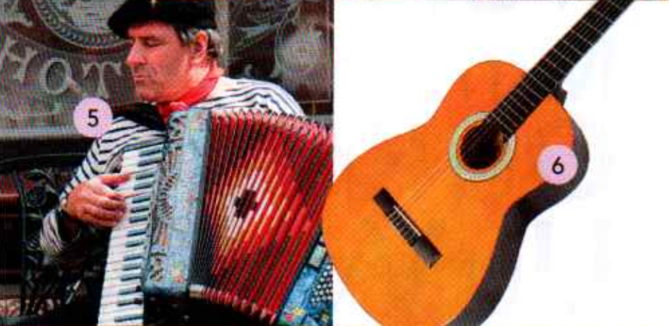

12.6.2023 18:46
| 1/ Barista 1 | Helen |
|---|---|
| A cappuccino, please. | |
| What’s your name? | |
| Helen. | |
| Ellen? | |
| No, Helen. | |
| Helen. OK. One cappuccino ! |
| 2/ Helen | Barista 2 |
|---|---|
| Are you Diana? | |
| No, I’m not. I’m Helen. | |
| Sorry. ... Helen? Your cappuccino. | |
| Thanks. |
| 3/ Tom | Helen |
|---|---|
| Hello. Are you Helen? | |
| Yes, I am. And you’re Tom. | |
| Yes! Nice to meet you. | |
| Nice to meet you. | |
| Just a minute. |
| 4/ BARISTA 1 | Tom |
|---|---|
| Hi. A tea, please. | |
| OK. What’s your name? | |
| Tom. | |
| Dorn. A tea. | |
| No! I'm Tom, not Dorn. |
Stejná nahrávka jako 1.2 ... ale bez hluku.
Zájmena: I You = Já Ty Sloveso be: ..am ..are = ...jsem ... jsi
| Full form | Contraction | ||
|---|---|---|---|
| I am Helen. | I’m Helen. | - | Já jsem Helena. |
| You are Tom. | You're Tom. | - | Ty jsi Tom. |
| I am not Ellen. | I’m not Ellen. | - | Já nejsem ... |
| You are not Dorn. | You aren't Dorn. | - | Ty nejsi ... |
contraction = stažené tvary
| [?] | [+] | [-] |
|---|---|---|
| Am I in class 2? | Yes, you are. | No, you aren’t. |
| Are you Mike? | Yes, I am. | No, I’m not. |
... in class = ve třídě (školní)
| -> | Contraction | |||
|---|---|---|---|---|
| 1 | I am | I'm | - | Já jsem ... |
| 2 | you are | you’re | - | Ty jsi ... |
| 3 | I am not | I'm not | - | Já nejsem ... |
| 4 | you are not | you aren’t | - | Ty nejsi |
| Maria: | A cappuccino, please. |
| Andrew: | A tea for me. |
| Sally: | And a tea for me, too. |
| Barista: | What’s your name? |
| Maria: | Maria. |
| Andrew: | I’m Andrew. |
| Sally: | I’m Sally. |
| Barista: | Two teas and one cappuccino. |
Jaký z obrázků ukazuje co si objednali?
| 0 | zero |
| 1 | one |
| 2 | two |
| 3 | three |
| 4 | four |
| 5 | five |
| 6 | six |
| 7 | seven |
| 8 | eight |
| 9 | nine |
| 10 | ten |
1 2 - 37 8 - 93 4 - 55 6 - 74 5 - 62 3 - 46 7 - 80 1 - 28 9 - 10
house /h/ hi hello Helen
bike /ai/ I'm nice five nine
tree /i:/ meet three tea please
Hello, Helen!
Hi, I'm Mike.
Three teas, please.
| Monday | - | pondělí |
| Tuesday | - | úterý |
| Wednesday | - | středa |
| Thursday | - | čtvrtek |
| Friday | - | pátek |
| Saturday | - | sobota |
| Sunday | - | neděle |
Goodbye, Tom. = Nashledanou Tome See you on Friday. = Uvidíme se v pátek. Bye. = Naschle
| Hello. | - | Zdravím. |
| Hi. | - | Ahoj |
| What’s your name? | - | Jaké je tvé jméno? |
| Nice to meet you. | - | Rád vás potkávám. |
| A cappuccino, please. | - | Kapučíno prosím. |
| A tea. | - | Jeden čaj. |
| Yes. | - | Ano |
| No. | - | Ne |
| OK. | - | Dobře |
| Thanks. | - | Díky |
| Sorry. | - | Promiňte |
| Just a minute. | - | Jen minutku. |
| Goodbye. / Bye. | - | Nashle |
| See you on Friday. | - | Uvidíme se v pátek. |
| See you tomorrow. | - | Uvidíme se zítra. |
Listen to the music. Where's it from? ° China ° England ° Spain ° the United States ° Turkey
Jako 1.16 - odpovědi:
| Music | Where's it from? | |
|---|---|---|
| 1 | Flamenco | from Spain |
| 2 | American country music | ... the United States |
| 3 | Chinese music | ... China |
| 4 | Turkish music | ... Turkey |
| 5 | English folk e.g. a bit of Eliza McCarthy | ... England |
| 1 | Brazil |
| 2 | China |
| 3 | Egypt |
| 4 | England (the UK) |
| 5 | France |
| 6 | Germany |
| 7 | Italy |
| 8 | Japan |
| 9 | Mexico |
| 10 | Poland |
| 11 | Russia |
| 12 | Spain |
| 13 | Switzerland |
| 14 | Turkey |
| 15 | The United States |
A: Where are you from? B: I’m from Toledo.
A: Where's Toledo? B: It’s in Spain.
A: Wow! Caetano Veloso! B: Where's he from? A: He’s from Brazil.
B: Is Lila Downs from Brazil, too? A: No, she isn’t. She’s from Mexico.
B: Is she good? A: Yes, she is. Very good.
Jako 1.20 (bez hluku)
| [+] Full form | Contraction |
|---|---|
| He is from Italy. | He's from Italy. |
| She is from Spain. | She’s from Spain. |
| It is from China. | It’s from China. |
| [-] Full form | Contraction |
|---|---|
| He is not from Egypt. | He isn't from Egypt. |
| She is not from Brazil. | She isn’t from Brazil. |
| It is not from Japan. | It isn’t from Japan. |
| [?] | [+] | [-] |
|---|---|---|
| Is he from France? | Yes, he is. | No, he isn’t. |
| Is she from Turkey? | Yes, she is. | No, she isn’t. |
| Is it good? | Yes, it is. | No, it isn't. |
fish /ɪ/ it Italy six England phone /əʊ/ no don't Poland Mexico know snake /s/ say seven city nice shower /ʃ/ she Russia
Is he from Italy?
I don't know.
It's a nice city.
She’s from Russia.
| A: | B: | |
|---|---|---|
| 1 | Is he from Egypt? | Is she from Egypt? |
| 2 | He's from Turkey. | She's from Turkey. |
| 3 | Where’s he from? | Where's she from? |
| 4 | He's nice. | She's nice. |
| 5 | Where is he? | Where is she? |
| 1 | He's from the USA. |
| 2 | It’s from China. |
| 3 | He’s from Germany. |
| 4 | She’s from Egypt. |

| 5 | He’s from France. |
| 6 | It’s from Spain. |
| 7 | She’s from Japan. |
| 8 | He’s from Mexico. |
| 9 | It’s from Russia. |
| 10 | He’s from Italy. |
| 11 | It’s from Switzerland. |
| 12 | She’s from the UK. |
| Where are you from? |
| I’m from Spain. |
| Where’s Izmir? |
| I think it’s in Turkey. |
| It’s a nice city. |
| I don’t know. |
| Very good. |
| Wow! |
A B C D E F G H I J K L M N O P Q R S T U V W X Y Z
tree /i:/ B˷ C˷ D˷ E G˷ P˷ T˷ V˷ egg /e/ ˷F ˷L ˷M ˷N ˷S ˷X train /ei/ A ˷H J˷ K˷
1: E A 2: E I 3: U W 4: Y I 5: B P 6: B V 7: G J 8: K Q 9: M N 10: S C 11: D T 12: W V
1: A 2: E 3: W 4: I 5: B 6: V 7: J 8: K 9: N 10: C 11: T 12: W
1: VIP 2: CNN 3: FBI 4: BBC
5: ATM 6: USB 7: BMW 8: EU
Student: What’s libro in English? Teacher: Book.
Student: How do you spell it? Teacher: B-O-O-K.
1: the board 2: the door 3: a window 4: a chair 5: a coat 6: a table 7: a laptop 8: a dictionary 9: a piece of paper 10: a pen 11: a bag
The teacher says:
-> 1: Look at the board, please.
-> 2: Open your books.
-> 3: Go to page 10.
-> 4: Close your books.
-> 5: Stand up, please.
-> 6: Sit down.
You say:
-> 7: How do you spell it?
-> 8: Sorry? Can you repeat that, please?
-> 9: Excuse me. What’s gracias in English?
-> 10: I don’t understand.
-> 11: I don’t know.
-> 12: Sorry I’m late.
Teacher - Student
| 1/ | |
|---|---|
| T: | Open your books, please. Go to page 7. |
| S: | Sorry, can you repeat that, please? |
| T: | Go to page 7. |
| 2/ | |
|---|---|
| S: | Excuse me. How do you spell ‘birthday’? |
| T: | B-l-R-T-H-D-A-Y. |
| 3/ | |
|---|---|
| S: | Sorry I'm late. |
| T: | That’s OK. Sit down, please. |
1: Stand up. 2: Close your books. 3: Sit down please. 4: Open your books. 5: Go to page 9.
Hello. I’m Rob. I’m from London. I’m a journalist. Today I’m in Poland. I’m not on holiday. I’m here for work.
| Rob | Receptionist |
|---|---|
| Hello. | |
| Good afternoon. | |
| My name’s Rob Walker. I have a reservation. | |
| Sorry, what’s your surname? | |
| Walker. | |
| How do you spell it? | |
| W-A-L-K-E-R | |
| Sorry? | |
| W-A-L-K-E-R | |
| Thank you. OK, Mr Walker. You’re in room 321. | |
| Thanks. |
~ 1.43
Hi. I’m Jenny Zielinski. I’m from New York. Tomorrow’s my birthday, and my favourite restaurant in New York is Locanda Verde. It’s Italian.
| Waiter | Jenny |
|---|---|
| Locanda Verde. Good morning. How can I help you? | |
| Hello. A table for tomorrow, please. | |
| Tomorrow... er, Tuesday? | |
| Yes, that’s right. | |
| How many people? | |
| Three. | |
| What time? | |
| Seven o’clock. | |
| What’s your name, please? | |
| Jenny Zielinski. That’s Z-l-E-L-l-N-S-K-l. | |
| Thank you, Ms, er, Zielinski. OK. So, a table for three on Tuesday at seven. | |
| Great. Thanks. Bye. | |
| Goodbye, see you tomorrow. |
| Useful phrases | |
|---|---|
| Rob | I have a reservation. |
| Rec | How do you spell it? Sorry? Thank you. |
| Waiter | Good morning. How can I help you? |
| Jenny | A table for tomorrow, please. That’s right. |